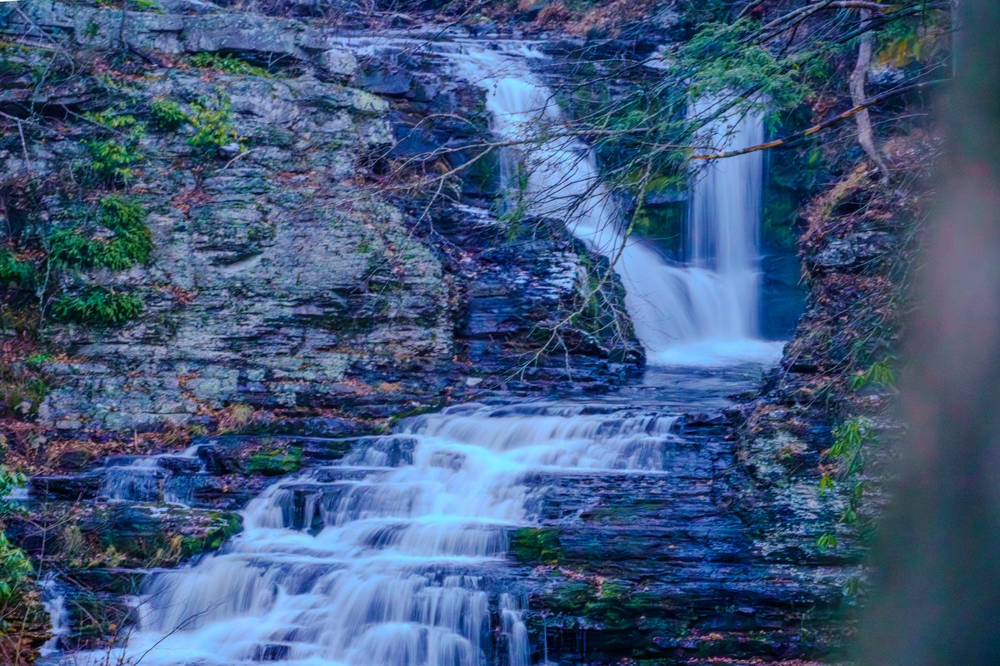

The waterfall is part of the stay
Guests can enjoy waterfall and creek views from the property setting, including the house, windows, decks, and outdoor areas.

Waterfall stay
Waterfall Wonder gives guests a creek-and-waterfall setting at the house, while Bushkill Falls is a separate public attraction to plan as a nearby outing.
Quick answer
This page is meant to prevent confusion. Waterfall Wonder is not inside Bushkill Falls. It is a separate cabin with its own natural creek and waterfall setting. Bushkill Falls is a separate waterfall attraction nearby, and guests should use its official page for current hours, tickets, pet rules, trails, weather, and seasonal access.
Important distinction
The cabin setting and the public attraction should be described separately so guests know what they are booking and what they are visiting.
Guests can enjoy waterfall and creek views from the property setting, including the house, windows, decks, and outdoor areas.
The property waterfall terrain is steep and natural. There is no maintained public path or staircase to the water; the safety and access notes collect the practical cautions in one place.
Bushkill Falls is the public waterfall park guests can plan for boardwalks, bridges, trail options, and visitor information when operating.
The waterfall guide uses an approximate 20-30 minute band from the Winona Falls and Bushkill-side area to Bushkill Falls.
Hours, admission, pet rules, trail access, weather closures, and seasonal policies can change. Confirm directly before leaving.
Visit Bushkill Falls during the day, then come back to the cabin for the hot tub, game room, fire pit, and group space.
How to plan it
Check Bushkill Falls official information for hours, tickets, trail access, pet rules, weather, and seasonal operating details.
Follow house guidance around the property waterfall, decks, outdoor stairs, hot tub, fire pit, and natural terrain.
Keep the rest of the day light. Large groups and families often do better returning for cabin downtime instead of adding another long stop.
FAQ
No. Waterfall Wonder is a separate Poconos cabin with its own waterfall and creek views. Bushkill Falls is a public waterfall attraction nearby.
The local guide uses an approximate 20-30 minute drive band from the Winona Falls and Bushkill-side area. Confirm the exact route and operating status before leaving.
Guests should treat the property waterfall as a view and setting, not as a public trail. Follow the house guidance for steep natural terrain.
Yes, if the attraction is operating and fits the group. It is the easiest public waterfall recommendation in the guide because the park manages visitor trails and current information.
Waterfall stay
Waterfall Wonder gives guests the cabin side of the experience: forest views, creek sound, hot tub, fire pit, and group space after the trail.

Plan your stay
Check dates, policies, and availability directly with WanderHome.